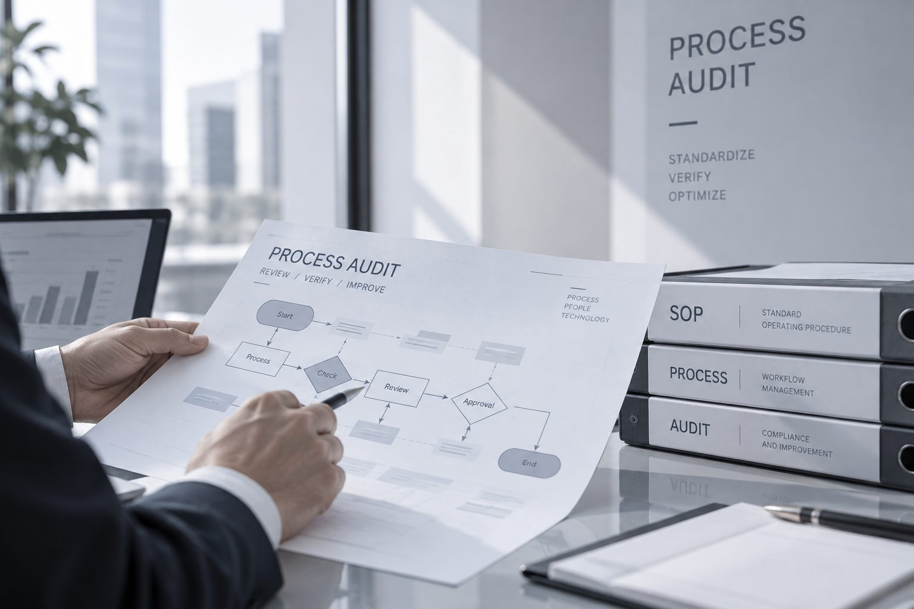

核实供应商注册信息、股权与经营状况、信用记录、诉讼与不良记录，帮助企业在寻源、品质筛查、流程核查各环节排查全过程风险，降低采购与供应链风险。We verify a supplier's registration, ownership, credit history, litigation and adverse records — helping you catch risk across sourcing, quality control and process review while it's still cheap to fix.
汽车制造、化工医药、食品饮料等行业普遍存在供应商依赖度高、采购集中、议价能力有限等情况。供应商尽调有助于在问题演变为损失之前将其识别出来，从而降低企业的成本与经营风险。Industries such as automotive, chemicals, pharmaceuticals and food & beverage often depend heavily on a small number of suppliers, leaving little room to negotiate. Supplier due diligence catches problems early, before they turn into cost and operating risk for the business.
我们的调查覆盖寻源审查、品质筛查、流程核查三大阶段：Our checks span three stages — sourcing review, quality screening and process review:
质量管控、价格合规、服务风险quality control, pricing compliance, service risk

寻源管理、关联风险、流程风险sourcing management, related-party risk, process risk
流程完善、漏洞修补、效能释放process improvement, gap remediation, efficiency
专业版套餐涵盖34项内容，深度版套餐扩展至55项，包括但不限于：Our Professional tier covers 34 checkpoints; the In-depth tier expands to 55, including:
注册资料、股东与股份、股东链、对外投资、法人反查、管理层与员工信息registration, shareholders, investment chain, legal-representative reverse search, management & staff
办公设施、主营业务、采购与销售情况、进出口情况、产品与设备facilities, core business, procurement/sales, import-export, products & equipment
信用记录、动产融资、股权出质、诉讼与不良记录、知识产权、行政许可核实credit history, asset financing, equity pledges, litigation, IP, licensing verification
财务报表、行业财务指标、营运状况分析、营销现状分析financial statements, industry benchmarks, operations & marketing analysis
在职/离职员工访谈、行业专家访谈、注册与经营地址走访、生产厂房环境走访current/former employee interviews, industry expert interviews, address & facility visits
34项调查内容，覆盖企业基础信息、经营业务、信用记录、财务报表与企业负面信息报告，适合常规供应商准入审查。34 checkpoints covering corporate basics, operations, credit, financials and an adverse-information report — suited for routine supplier onboarding review.
55项调查内容，在专业版基础上增加发展计划、认证情况、生产/仓储/后勤区域实地走访、周边企业员工访谈、企业信誉评价报告等，适合重点供应商或高风险场景。55 checkpoints, adding development plans, certifications, site visits to production/warehouse/logistics areas, interviews with staff at neighboring businesses and a reputation report — for key or higher-risk suppliers.
供应商相关的风险，往往在合作开始前更容易厘清。Supplier risk is easiest to address before a partnership begins.
无论涉及供应商背调、合规调查，还是投资尽职调查与市场研究，欢迎与我们联系。我们通常会在了解具体背景后，再建议合适的调查方案。Whether the matter involves a supplier check, a compliance investigation, or investment due diligence, we typically propose an approach only once we understand the specifics.

扫码添加，快速沟通Scan to connect instantly